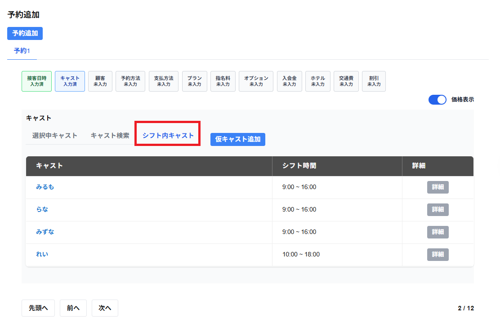

シフト内キャストの選択のタブには以下の項目が一覧で表示されます。
※該当するキャストがいない場合は、該当キャストがいません、と表示されます。
・キャスト
キャストの列には現在登録しようとしている接客日時がシフト内の範囲に入るキャストが一覧で表示されます。
※接客日時に予約・接客・休憩が重複しているキャストは表示されません。
・シフト時間
シフト時刻の列には登録しているシフト時刻が一覧で表示されます。
・詳細
詳細を確認したいキャストの行の詳細をクリックすると、本日以降の予約・接客が一覧で表示されます。
選択をしたいキャストの行をクリックすると、キャストを選択することができます。
選択したキャストは選択中キャストの選択のタブに表示されます。
